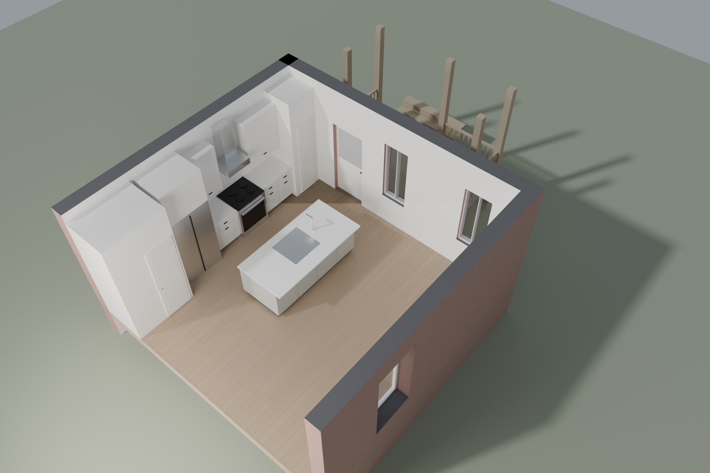
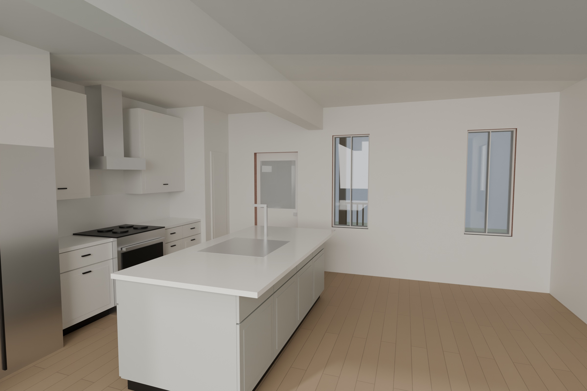
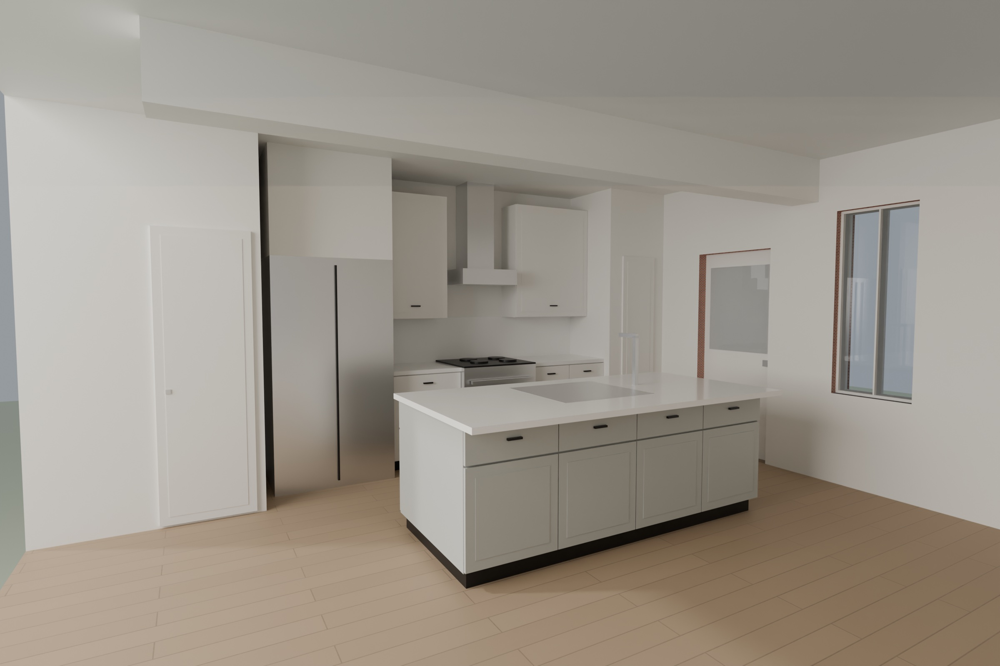

View
Layers
Drag to rotate. Right-drag or two fingers to pan. Scroll or pinch to zoom.
What is drawn and what is assumed
- From the approved plans: rear kitchen zone, rear wall door and windows, right-wall window, the 12' × 8' two-level rear porch, and the 21' building width. The highlight button colors these teal.
- Furniture: illustrative only, to show scale. It is not part of the drawings.
- From your street photo: the front door, paired window and front porch with shed roof.
- Not available: the existing floor plan (A1.0) is not in the PDF, so the house depth (about 38 ft), interior walls outside the kitchen, and window sizes outside the plan are my estimates. Finishes are placeholders.
Kitchen renderings

Cutaway view. Ceiling removed. The rear porch is at the top right.
Kitchen toward the rear wall. Island, 4'-0" aisle, range wall at left, rear door and two windows, dropped beam overhead.
Range wall and island. Pantry at far left, refrigerator, range with hood, island with sink.